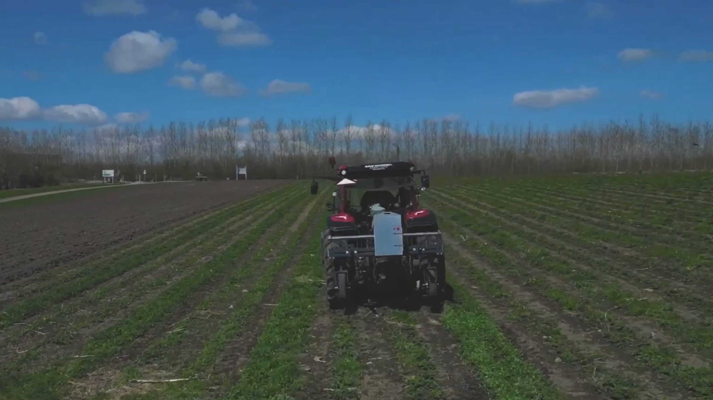

Ecoray
Autonomt laserlugemodul
Rækken er det sværeste sted at luge
Radrensning mellem rækkerne er løst. Ukrudt inde i rækken, mellem planterne, betyder stadig håndlugning eller sprøjtemidler, som bliver sværere at bruge. Det er lige der, Ecoray arbejder.

Sådan virker den
Traktoren kører 1–3 km/t. Ecoray klarer resten. Læs om teknikken.
-
Find
Kameraer under en lystæt afskærmning ser hver plante i rækken, mens traktoren kører.
-
Sigt
AI'en på maskinen skelner ukrudt fra afgrøde og finder vækstpunktet på hver ukrudtsplante, både tokimbladet ukrudt og græsser.
-
Fjern
Laseren opvarmer vækstpunktet, og ukrudtet dør i dagene efter. Jord og afgrøde bliver ikke rørt.
Se den i marken
Ecoray bag traktoren i en dansk grøntsagsmark, fra opsætning til det ukrudt, den fjerner.
Kapacitet, der vokser med din bedrift
Hvert modul dækker 60 cm. Vælg 2 til 10 moduler, og lug 0,1–0,3 ha i timen pr. meter.
2 moduler
0,12–0,36 ha/t
Ca. 1,2 m arbejdsbredde. En god start for mindre bedrifter og forsøg.
10 moduler
0,60–1,80 ha/t
Ca. 6 m arbejdsbredde til grøntsagsproduktion i fuld skala.
Kørehastighed 1–3 km/t, afhængigt af ukrudtstrykket.
Præcis nok til rækken
Lige i vækstpunktet
Laseren rammer ukrudtets vækstpunkt, få centimeter fra afgrøden.
Jorden bliver ikke rørt
Intet rører jorden, så der kommer ikke nye ukrudtsfrø op til overfladen.
Trænet i rigtige marker
AI'en er trænet på billeder fra danske grøntsagsmarker, sæson efter sæson.

Bygget i moduler
Start med to moduler, eller sæt op til ti ved siden af hinanden, så det passer til dine bede.
I trepunktsophænget
Passer til den traktor, du har, fra ca. 30 hk til to moduler. Du skal ikke købe en særlig redskabsbærer.
Støttehjul
Hvert modul kører på sine egne hjul og holder den rigtige arbejdshøjde over ujævn jord.
Bygget til marken
Lukket aluminiumskabinet i IP69K, der tåler regn, støv og højtryksrens.
Til rækkeafgrøder med høj værdi
Ecoray fjerner ukrudtet i kimbladsstadiet, hvor det er lettest at dræbe og endnu ikke har konkurreret med din afgrøde.
- Gulerødder
- Løg
- Rødbeder
- Nordmannsgran
Dyrker du noget andet? Skriv det, når du beder om et tilbud.
Nøgletal
| Ukrudt fundet | 96,5 % (målt i marken) |
|---|---|
| Ukrudt dræbt | Mål: 95 % (7–14 dage efter en kørsel) |
| Arbejdsbredde | 60 cm pr. modul, 2 til 10 moduler (1,2 til 6 m) |
| Kapacitet | 0,1–0,3 ha/t pr. meter arbejdsbredde |
| Kørehastighed | 1–3 km/t, afhængigt af ukrudtstrykket |
| Ukrudtets størrelse | 5–25 mm, kimbladsstadiet |
| Montering | Trepunktsophæng, støttehjul på hvert modul |
| Traktor | Fra 30 hk (2 moduler) til 120 hk (10 moduler) |
| Levering | Senest 15. marts 2027 (bestil senest 15. december 2026) |
| Garanti | 1 år inkl. dele, arbejdstid og sliddele |
Få et tilbud til sæsonen 2027
Tilbuddet er gratis. Fortæl os om din bedrift, så regner vi på en Ecoray til dig.